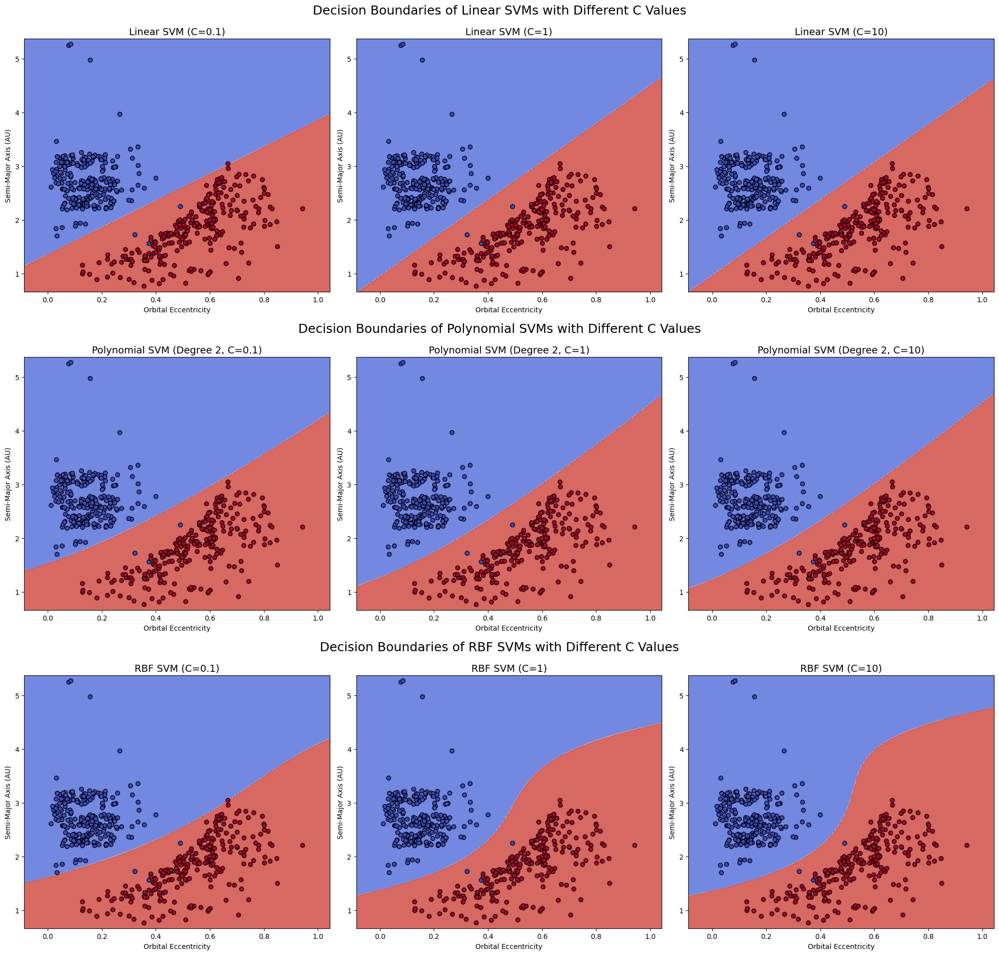

Conclusion
This project set out to explore how machine learning can aid in predicting potentially hazardous asteroid collisions with Earth. By analyzing a rich dataset of Near-Earth Objects (NEOs) collected from NASA and other astronomical sources, we were able to engineer a pipeline that used both unsupervised and supervised learning models to understand asteroid behavior and estimate collision risk. Through thoughtful preprocessing, feature selection, and class balancing using SMOTE, we prepared a robust foundation for reliable prediction. Our ultimate objective was not just accuracy, but interpretability and real-world relevance for planetary defense initiatives.
In the unsupervised learning stage, we applied Principal Component Analysis (PCA) to reduce dimensionality and improve feature interpretability. Clustering algorithms like K-Means and DBSCAN revealed meaningful groups among asteroids, many with patterns based on size, eccentricity, and proximity to Earth. Association Rule Mining (ARM) allowed us to uncover if–then patterns between orbital features and hazard status. These early explorations helped us better understand how asteroids group together and what features might be early indicators of risk, especially for objects not previously flagged as dangerous.
We then transitioned into supervised learning with Naïve Bayes, Decision Trees, and Support Vector Machines (SVMs). Naïve Bayes models offered fast and interpretable results, especially when tuned across Multinomial, Bernoulli, and Gaussian variants. Decision Trees provided a transparent way to visualize decision logic based on orbital elements like MOID and inclination. SVMs were explored extensively using Linear, Polynomial, and RBF kernels, with three different regularization values (C=0.1, 1, 10) for each. We analyzed how these kernels handled margin flexibility and false positives, and used decision boundary plots to visualize their performance. Across models, recall was consistently strong—especially crucial when identifying rare hazardous events.
To close the modeling phase, we implemented an ensemble learning method using Random Forests. This bagging-based approach aggregated multiple Decision Trees and achieved near-perfect classification on the test set. All hazardous asteroids were detected (recall = 1.00), with only a handful of false positives. This demonstrated the model’s strength in learning complex non-linear relationships without overfitting. Feature importance rankings showed that Earth Minimum Orbit Intersection Distance (MOID), semi-major axis, and diameter were the top contributors to hazard classification—offering actionable insights for astronomers and mission planners.
In conclusion, this project highlights how modern machine learning models can support critical planetary defense operations. By combining PCA, clustering, ARM, classification models, and ensemble techniques, we built a pipeline capable of learning from vast and complex astronomical datasets. The results were not only statistically accurate but also interpretable, visualized, and aligned with real-world asteroid risk scenarios. This work reflects the growing potential of AI in space science, offering scalable, accurate, and explainable solutions for detecting cosmic threats. With further data, global collaboration, and interdisciplinary innovation, we believe this pipeline can be a strong starting point for future asteroid monitoring and impact mitigation efforts.

Figure 1: Decision boundaries for SVMs with Linear, Polynomial, and RBF kernels.

Figure 2: Random Forest model confusion matrix showing excellent precision and recall.